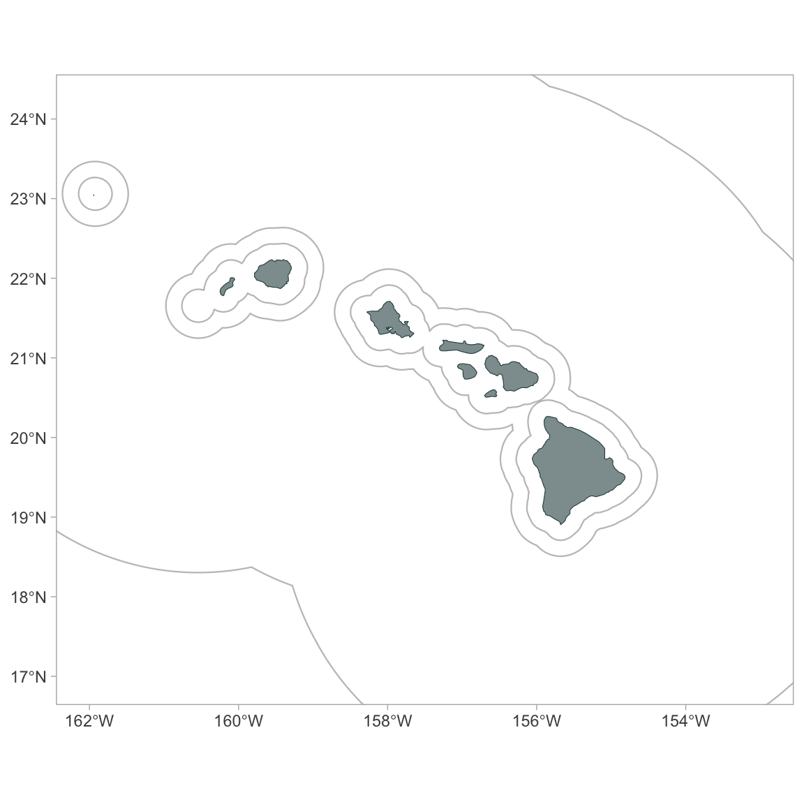
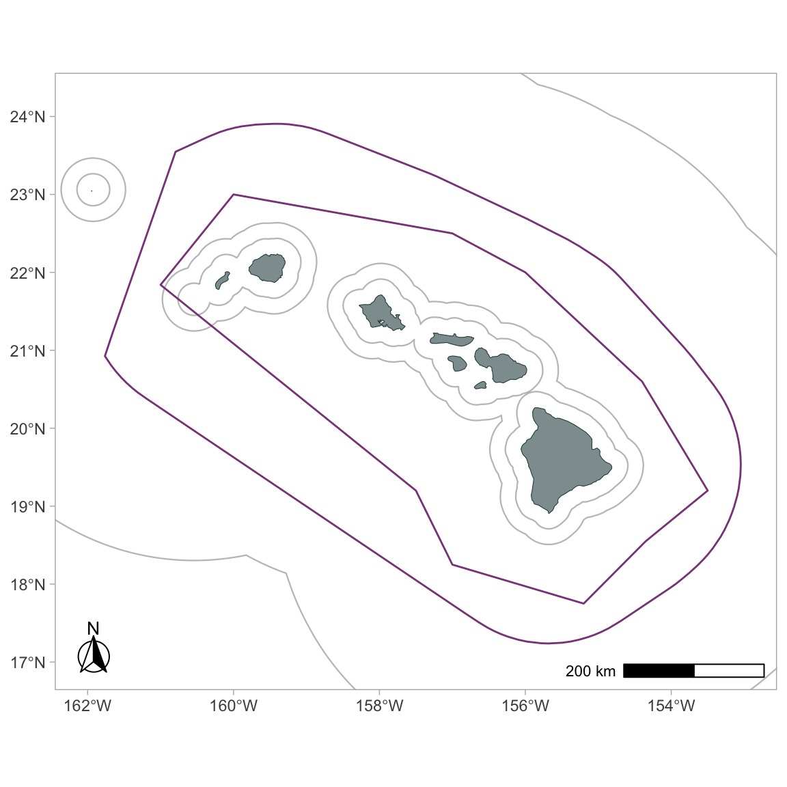
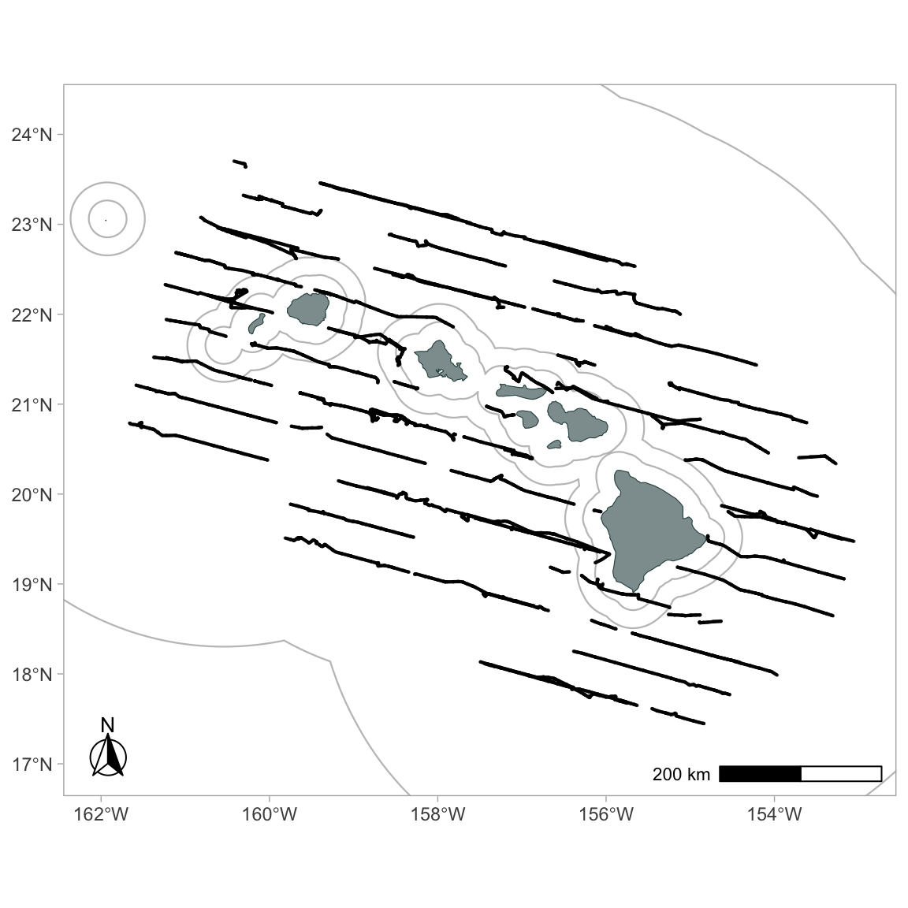
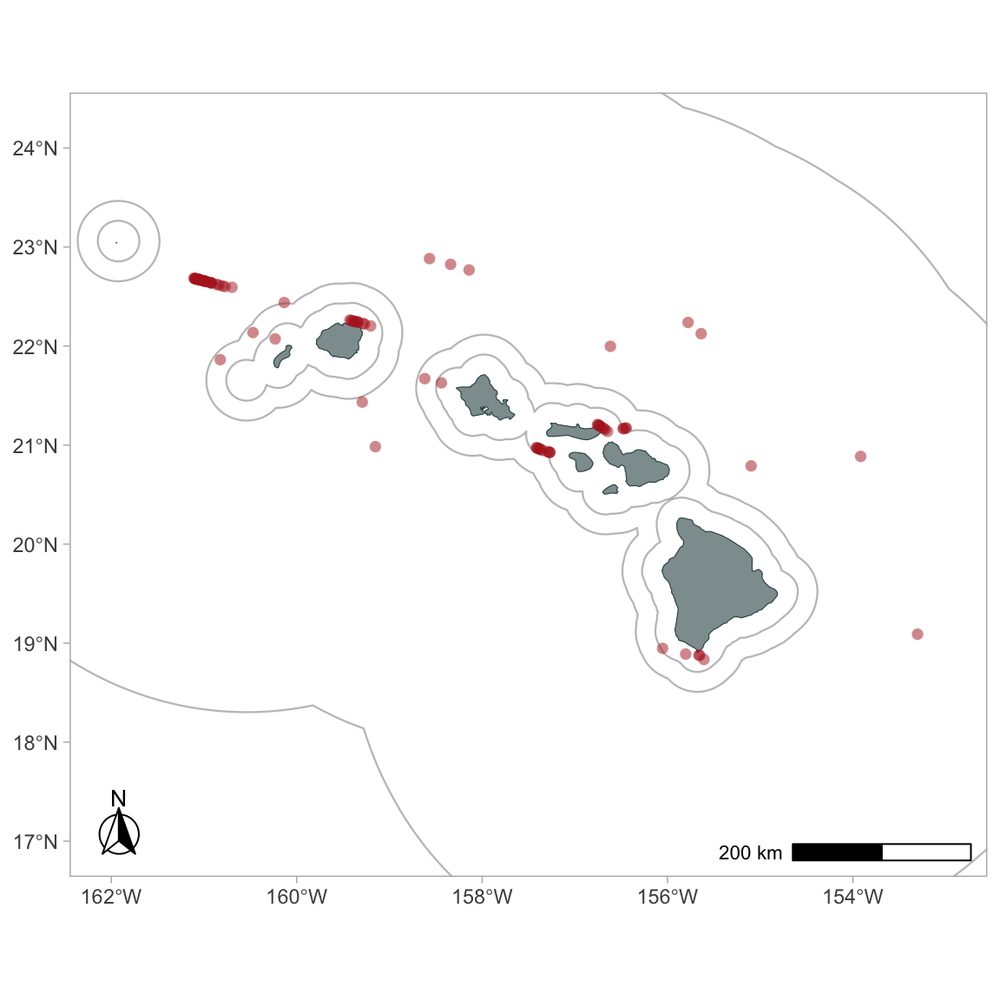
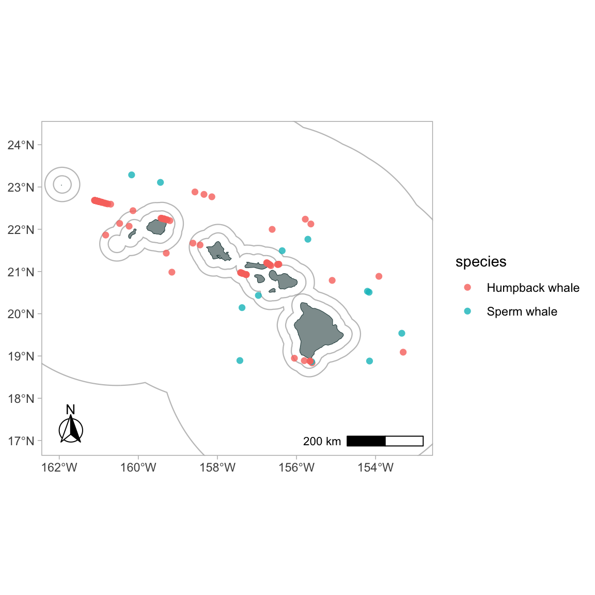
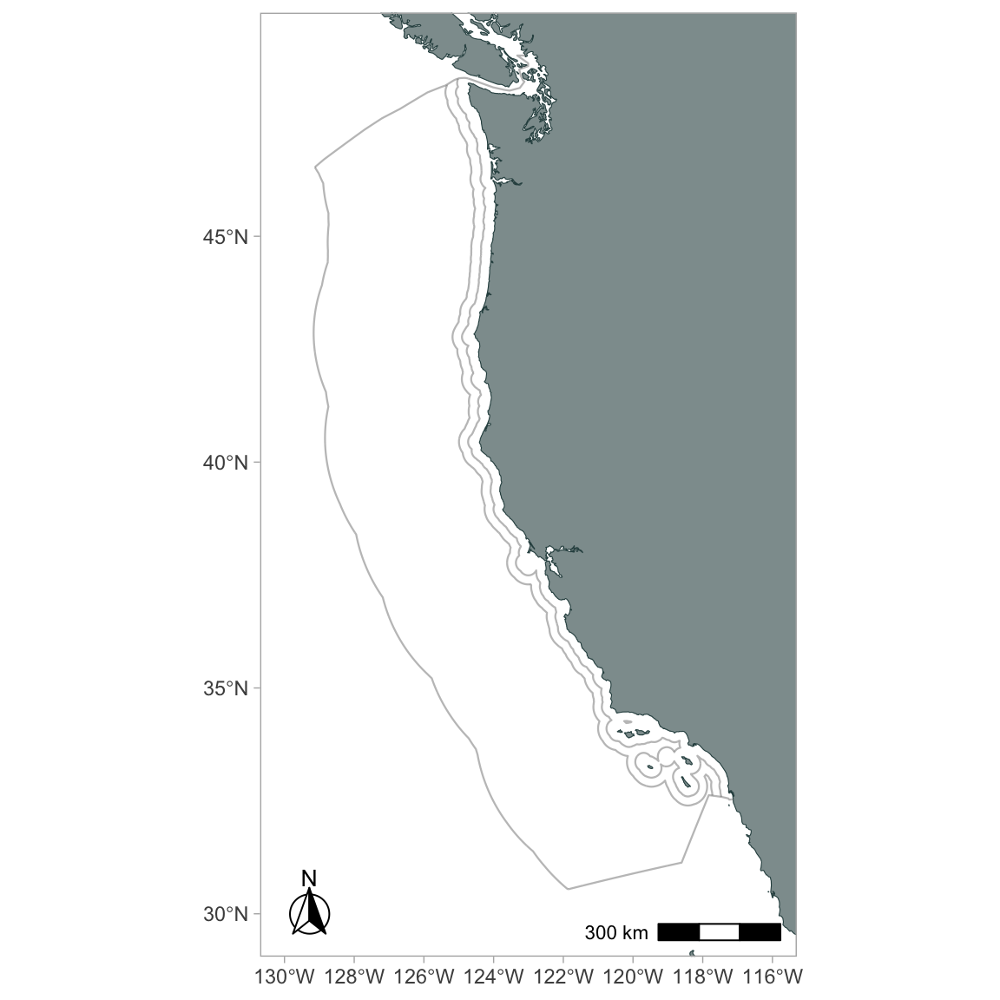
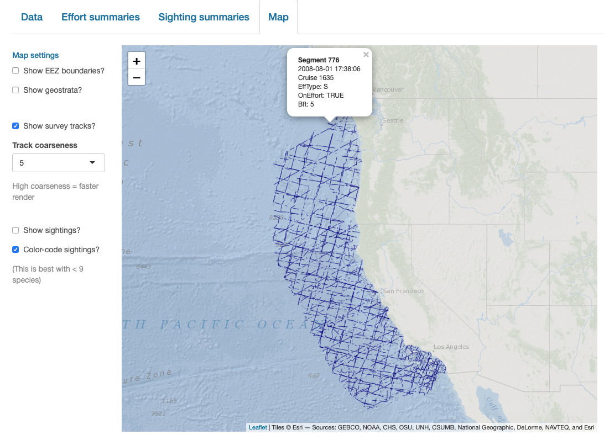

Chapter 6 Maps
To facilitate mapping with the processed data objects produced by LTabundR, we provide the following datasets and functions. These features are designed specifically for creating maps in R using the packages ggplot2 and sf.
Creating a base map
All of the mapping functions in LTabundR are designed to be added onto a pre-existing map that you have already created with ggplot2, which itself has several functions that tie into the spatial functions in the package sf. There are already several great resources out there for creating maps with ggplot and sf. (Here is one example.).
Here we provide a couple simple examples to demonstrate some of the spatial datasets that come with LTabundR. To begin, decide upon the CRS projection you wish to use for your map. (This website may be helpful.).
It will also be helpful to create objects for your desired geographic range, since you might need to refer to them multiple times:
To create a simple map of the main Hawaiian islands, for example, you can use the LTabundR datasets named "land" and "coastline", which are global datasets downloaded using the rnaturalearth package, and the dataset "eez_hawaii, all of which have been provided as sf objects:
# Load dataset
data('land', package='LTabundR')
data('coastline', package='LTabundR')
data('eez_hawaii', package='LTabundR')
# Look at an example of structure
coastline %>% head
Simple feature collection with 6 features and 3 fields
Geometry type: LINESTRING
Dimension: XY
Bounding box: xmin: -180 ymin: -85.22194 xmax: 166.2263 ymax: 3.492087
Geodetic CRS: WGS 84
featurecla scalerank min_zoom geometry
1 Coastline 0 0 LINESTRING (59.91603 -67.40...
2 Coastline 0 0 LINESTRING (-51.73062 -82.0...
3 Coastline 6 5 LINESTRING (166.137 -50.864...
4 Coastline 0 0 LINESTRING (-56.66832 -36.7...
5 Coastline 0 0 LINESTRING (-51.07939 3.492...
6 Coastline 6 5 LINESTRING (-80.75935 -33.7...
# Specify CRS
st_crs(coastline) <- my_crs
st_crs(land) <- my_crs
st_crs(eez_hawaii) <- my_crsNow build a simple map, specifying the geographic range:
p <- ggplot() +
geom_sf(data=land, fill='darkslategrey', color=NA, alpha=.6) +
geom_sf(data=coastline, color='darkslategrey', alpha=1, lwd=.2) +
geom_sf(data=eez_hawaii, color='grey50', alpha=.5, lwd=.4) +
coord_sf(xlim=xlims, ylim=ylims)
pRemove some of the default features:
p <- p +
xlab(NULL) + ylab(NULL) +
theme_light() +
theme(strip.background = element_rect(fill = "grey45"),
panel.grid.major = element_blank(),
panel.grid.minor = element_blank())
p
Make it a bit fancier, using some functions from the package ggspatial:
p <- p +
ggspatial::annotation_north_arrow(location = "bl",
which_north = "true",
height = unit(1, 'cm'),
width = unit(1, 'cm'),
style = ggspatial::north_arrow_fancy_orienteering) +
ggspatial::annotation_scale(location='br')
p
Now this base map is ready for some actual survey data! We can use the built-in dataset for Pacific surveys, 1986 - 2020:
Add stratum boundaries
Use the function gg_geostratum() to add geostratum boundaries from your cruz object to your map:
gg_geostratum(p,
cruz,
strata = c('MHI', 'WHICEAS')) +
# force limits to stay unchanged
coord_sf(xlim=xlims, ylim=ylims) 
Here that function is again, demonstrating some of the optional inputs:
gg_geostratum(p,
cruz,
strata = c('MHI', 'WHICEAS'),
color = c('darkorange', 'darkorchid'),
lty = 3,
lwd = .5) +
# force limits to stay unchanged
coord_sf(xlim=xlims, ylim=ylims)
Add effort tracklines
Before adding survey data, let’s filter down to just the WHICEAS cruises from 2017 to 2020:
cruz_1720 <-
filter_cruz(cruz,
eff_types = 'S',
bft_range = 0:6,
years = c(2017, 2020),
regions = 'WHICEAS')Now use the function gg_effort() to add effort tracklines from your cruz object to your map:
To color code by Beaufort sea state:

Add faceting (you can use any column from the processed DAS data in subsequent ggplot2 commands:
Add sightings
Use the function gg_sightings() to add sightings from your cruz object to your map:
To plot detections of certain species only:
To color-code detections by species:
gg_sightings(p, cruz_1720,
spp = c('076', '046'),
color_by_spp = TRUE,
cex = 2,
alpha = 1,
pch = 15)
To translate species codes to full common names, you can supply a data.frame with the necessary translation information. LTabundR comes with a built-in dataset for Pacific species, "species_codes".
Other base maps
Hawaiian EEZ
The Hawaii EEZ is tricky to map because it crosses the International Date Line (IDL). To facilitate maps of this region, LTabundR includes a function, ggplot_idl(), to which you can pass a ggplot2 map object.
# Load datasets
data('land', package='LTabundR')
data('coastline', package='LTabundR')
data('eez_hawaii', package='LTabundR')
# Specify CRS
my_crs <- 4326
st_crs(coastline) <- my_crs
st_crs(land) <- my_crs
st_crs(eez_hawaii) <- my_crs
# Make map
p <-
ggplot() +
geom_sf(data=land, fill='darkslategrey', color=NA, alpha=.6) +
geom_sf(data=coastline, color='darkslategrey', alpha=1, lwd=.2) +
geom_sf(data=eez_hawaii, color='grey50', alpha=.5, lwd=.4) +
xlab(NULL) + ylab(NULL) +
theme_light() +
theme(strip.background = element_rect(fill = "grey45"),
panel.grid.major = element_blank(),
panel.grid.minor = element_blank())
# Handle IDL
ggplot_idl(p,
lon_range=c(175, -150),
lat_range = c(14.8, 33))
California Current System
my_crs <- 4326
xlims <- c(-130, -116)
ylims <- c(30, 49)
# Load dataset
data('land', package='LTabundR')
data('coastline', package='LTabundR')
data('eez_ccs', package='LTabundR')
# Specify CRS
st_crs(coastline) <- my_crs
st_crs(land) <- my_crs
st_crs(eez_ccs) <- my_crs
ggplot() +
geom_sf(data=land, fill='darkslategrey', color=NA, alpha=.6) +
geom_sf(data=coastline, color='darkslategrey', alpha=1, lwd=.2) +
geom_sf(data=eez_ccs, color='grey50', alpha=.5, lwd=.4) +
coord_sf(xlim=xlims, ylim=ylims) +
xlab(NULL) + ylab(NULL) +
theme_light() +
theme(strip.background = element_rect(fill = "grey45"),
panel.grid.major = element_blank(),
panel.grid.minor = element_blank()) +
ggspatial::annotation_north_arrow(location = "bl",
which_north = "true",
height = unit(1, 'cm'),
width = unit(1, 'cm'),
style = ggspatial::north_arrow_fancy_orienteering) +
ggspatial::annotation_scale(location='br')Eastern tropical Pacific
The built-in LTabundR dataset data(eez) has all EEZ boundaries for US territories.
my_crs <- 4326
xlims <- c(-175, -60)
ylims <- c(-20, 49)
# Load dataset
data('land', package='LTabundR')
data('coastline', package='LTabundR')
data('eez', package='LTabundR')
# Specify CRS
st_crs(coastline) <- my_crs
st_crs(land) <- my_crs
st_crs(eez) <- my_crs
ggplot() +
geom_sf(data=land, fill='darkslategrey', color=NA, alpha=.6) +
geom_sf(data=coastline, color='darkslategrey', alpha=1, lwd=.2) +
geom_sf(data=eez, color='grey50', alpha=.5, lwd=.4) +
coord_sf(xlim=xlims, ylim=ylims) +
xlab(NULL) + ylab(NULL) +
theme_light() +
theme(strip.background = element_rect(fill = "grey45"),
panel.grid.major = element_blank(),
panel.grid.minor = element_blank()) +
ggspatial::annotation_north_arrow(location = "bl",
which_north = "true",
height = unit(1, 'cm'),
width = unit(1, 'cm'),
style = ggspatial::north_arrow_fancy_orienteering) +
ggspatial::annotation_scale(location='br')
Interactive maps
LTabundR also has an interactive map function, which maps survey data using the leaflet package.
map_cruz(cruz_1720,
cohort=1,
eez_show=FALSE,
strata_show=FALSE,
effort_show=TRUE,
sightings_show=TRUE,
sightings_color = 'firebrick',
verbose=FALSE)Note that you can also click on sightings and tracklines to see their details. Refer to the documentation for this function (?map_cruz) to see all the options available for stylizing these maps.
Interactive dashboard
Finally, note that LTabundR comes with an interactive data explorer app (a Shiny app) for filtering survey data according to effort scenario and species code, toggling map_cruz() settings, and reviewing summary tables of effort and sightings (including inspection of truncation distances).
Screenshots from this app:


